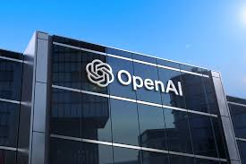

OpenAI
OpenAI - L’entreprise qui a créé ChatGPT
- Pays : États-Unis
- Siège social : San Francisco, Californie
- Chiffre d’affaires : 5,5 milliards de dollars en 2024, objectif de 12,7 milliards pour 2025
- Fondateurs : Sam Altman, Elon Musk, Greg Brockman, Ilya Sutskever, John Schulman, Andrej Karpathy, Trevor Blackwell, Pamela Vagata, Vicki Cheung, Wojciech Zaremba et Durk Kingma
- Année de création : 2015
OpenAI est sans conteste l’entreprise IA la plus médiatisée de la décennie. Et pour cause : en sortant son agent conversationnel, ChatGPT, en 2022, elle a lancé une véritable révolution dans la tech.
Selon jedha.co
Microsoft Azure
Microsoft Azure AI - L’IA qui s’intègre dans Word, Excel… et qui révolutionne votre vie professionnelle
- Pays : États-Unis
- Siège social : Redmond, Washington
- Chiffre d’affaires : 87,9 milliards de dollars pour la division Cloud, dont dépend Microsoft Azure AI, en 2023
- Fondateurs : Bill Gates et Paul Allen
- Année de création : 1975
Si vous utilisez Word, Excel ou Outlook, vous avez probablement déjà croisé Copilot, l’assistant IA signé Microsoft. Et si cette technologie fonctionne, c’est grâce à Azure AI, la solution d’intelligence artificielle de Microsoft. Hébergée sur le Cloud de l’entreprise, des millions de professionnels l’utilisent chaque jour.
Selon jedha.co
Nvidia
NVIDIA - Le géant des puces qui fait tourner l’IA au niveau mondial
- Pays : États-Unis
- Siège social : Santa Clara, Californie
- Chiffre d’affaires : 130,5 milliards de dollars en 2024
- Fondateurs : Jensen Huang, Chris Malachowsky, Curtis Priem
- Année de création : 1993
Si NVIDIA n’était pas une entreprise d’intelligence artificielle à l’origine, elle l’est devenue par la force des choses. Et pour cause : elle est le leader mondial de la fabrication des GPU, les processeurs graphiques indispensables à l'entraînement des modèles d’IA. Gemini, Claude, ChatGPT, DeepMind, tous s’appuient sur des puces NVIDIA pour fonctionner, ce qui fait de cette entreprise l’un des piliers de l’intelligence artificielle.
Selon jedha.co